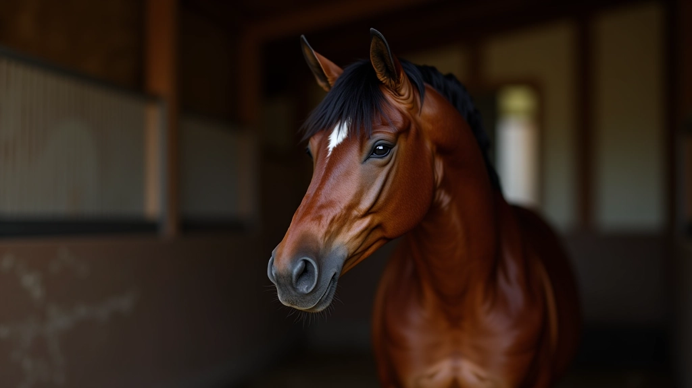
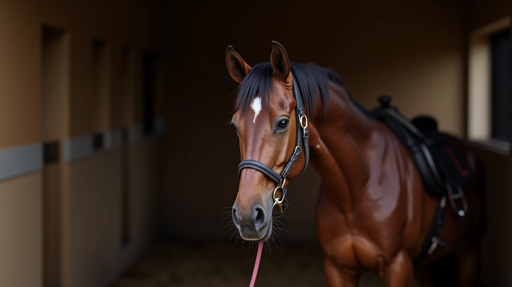
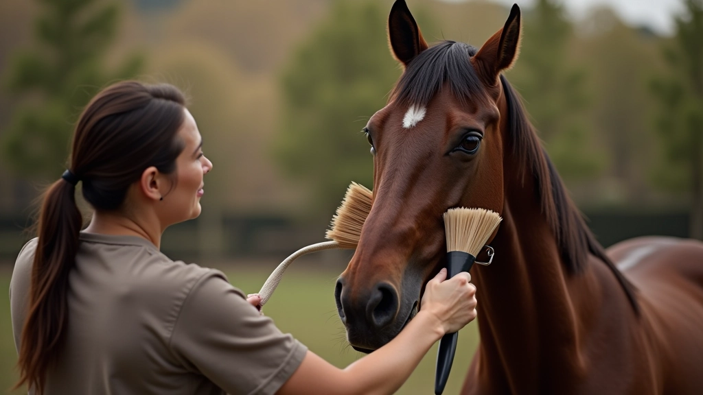
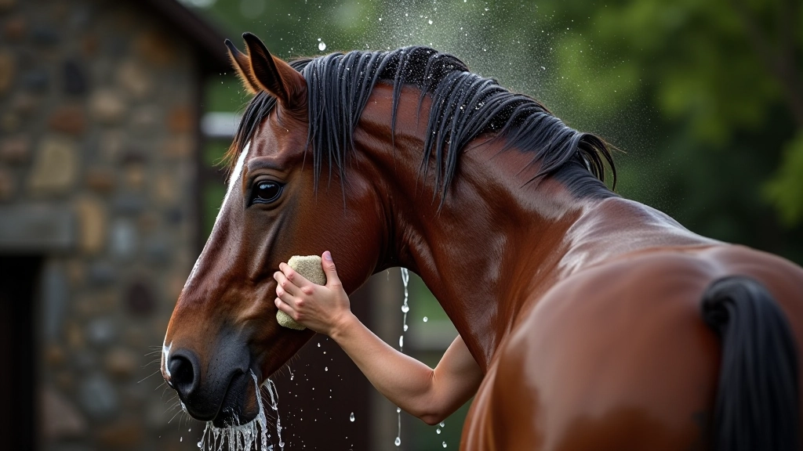
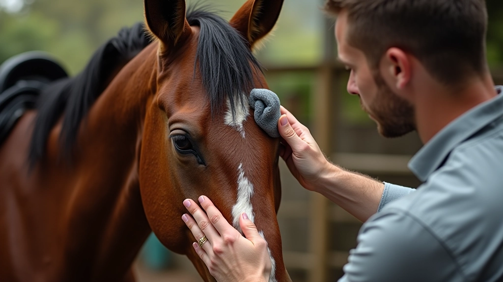
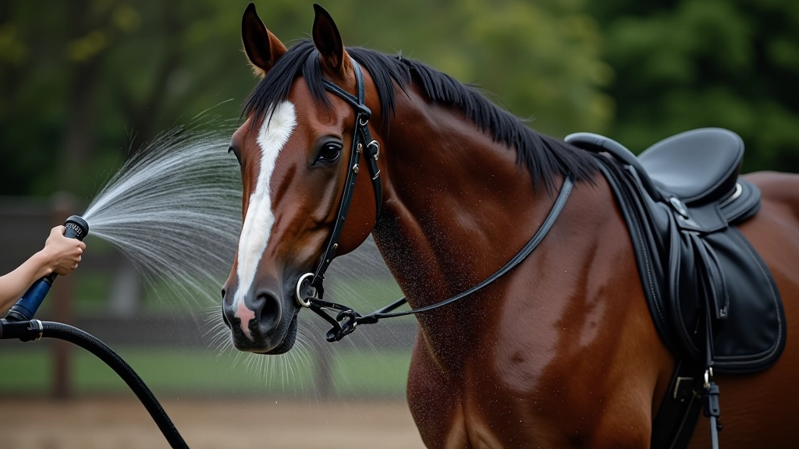
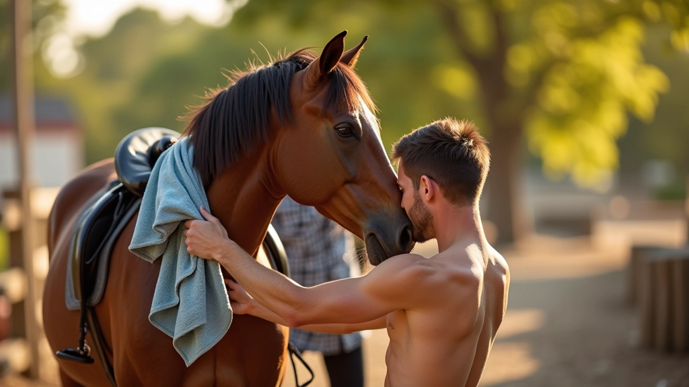
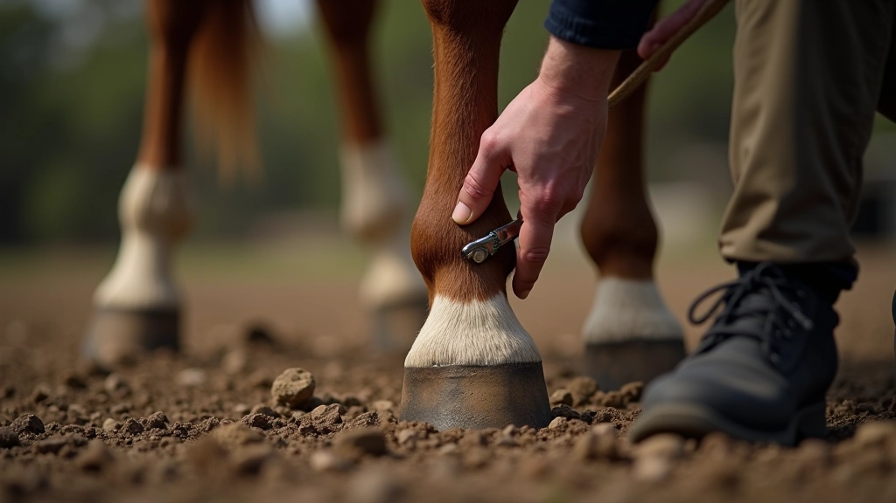

دليل تركيب السرج خطوة بخطوة
اتعلم كيفية وضع السرج بطريقة آمنة وصحيحة على ظهر الحصان لضمان راحته وسلامة الفار...
تعرف على الطريقة الصحيحة لتنظيف الحصان يومياً، من الفرشاة الأولى إلى العناية بالحوافر والذيل بعناية

تنظيف الحصان ليس مجرد مسألة جمالية. إنه جزء أساسي من الرعاية الصحيحة. عندما تحافظ على نظافة حصانك، تمنع الأمراض الجلدية والعدوى، وتحسّن من صحة الجلد والفرو. بالإضافة إلى ذلك، يساعد التنظيف المنتظم في اكتشاف أي مشاكل صحية مبكراً قبل أن تصبح خطيرة.
الحصان السليم هو حصان نظيف. يستغرق التنظيف الجيد بعض الوقت والصبر، لكنك ستلاحظ الفرق في طاقة حصانك وسلوكه وصحته العامة. أغلب الخيول تستمتع بوقت التنظيف عندما تتعامل معها برفق وتعرف ماذا تفعل.

قبل أن تبدأ بتنظيف حصانك، تأكد من أن لديك كل الأدوات اللازمة. الأدوات الصحيحة تجعل العملية أسهل وأسرع وأكثر فعالية.
استخدم فرشاة صلبة لإزالة الأوساخ الجافة، وفرشاة ناعمة لتنظيف الوجه والأماكن الحساسة. الفرشة الطويلة مفيدة للبطن والأرجل.
استخدم ماء دافئ وصابون خاص بالخيل. الماء البارد جداً قد يزعج الحصان، والماء الساخن جداً قد يضر بالجلد.
الإسفنج الناعم مثالي لتنظيف الوجه والرقبة. المناشف الكبيرة تساعد في تجفيف الحصان بعد الاستحمام.
مشط خاص بالخيل يساعد في فك تشابك الشعر برفق دون إيذاء الحصان أو تكسير الشعر.
أداة خاصة لإزالة الأوساخ من داخل الحافر. من المهم تنظيف الحوافر يومياً لمنع الأمراض.
دلو كبير لحمل الماء والصابون. خرطوم بماء دافئ يجعل عملية الشطف أسهل وأسرع.
اتبع هذه الخطوات بالترتيب للحصول على أفضل النتائج. لا تتسرع — الصبر هو المفتاح.
ابدأ بربط الحصان في مكان آمن حيث يمكنك التحرك حوله بسهولة. تأكد من أنه مرتاح وهادئ قبل البدء. تحدث إليه بهدوء واجعله يعتاد على وجودك.

استخدم الفرشاة الصلبة لإزالة الأوساخ والتراب الجاف من جسم الحصان. اعمل من الرقبة نحو الذيل، بحركات قوية لكن برفق. ركز على المناطق التي تتسخ أكثر مثل الأرجل والبطن.

اخلط الصابون الخاص بالخيل مع الماء الدافئ في دلو. استخدم الإسفنج أو قطعة قماش لتطبيق الماء والصابون على جسم الحصان. ابدأ من الرقبة وانتقل ببطء إلى باقي الجسم. تجنب الوجه في البداية.

بعد تنظيف الجسم، انتقل إلى الوجه والرقبة. استخدم إسفنجة ناعمة جداً ومياه نظيفة فقط (بدون صابون) لتنظيف الوجه. كن حذراً جداً حول العينين والأنف والآذان. لا تضع الماء مباشرة في الأنف.

الشطف مهم جداً. تأكد من إزالة كل الصابون من جسم الحصان. الصابون المتبقي قد يسبب حكة وتهيج الجلد. استخدم ماء نظيف دافئ وشطّف بشكل جيد حتى لا تبقى فقاعات صابون.

بعد الشطف، جفّف الحصان بمنشفة نظيفة. يمكنك أيضاً استخدام عصا تجفيف خاصة إذا كان الطقس بارداً. تأكد من تجفيف جميع الأماكن، خاصة بين الأرجل والإبط. حصان رطب قد يصاب بالبرد.

الخطوة الأخيرة مهمة جداً. نظّف الحوافر باستخدام أداة تنظيف الحوافر. أزل كل الأوساخ من داخل الحافر. ثم استخدم مشط خاص لفك تشابك الذيل والرقبة. افعل هذا برفق حتى لا تكسر الشعر.

الماء الدافئ هو الأفضل — حوالي 30-35 درجة مئوية. الماء البارد جداً قد يصدم الحصان، والماء الساخن قد يضر الجلد. اختبر الماء بيدك قبل استخدامه.
لا تستحم الحصان عندما يكون متعباً جداً أو مرتفع الحرارة بسبب التمرين. انتظر 30-45 دقيقة بعد التمرين الشديد. في الطقس البارد، استحم الحصان في الصباح لكي يجف قبل الغروب.
بعض الخيول تخاف من الماء. لا تجبر الحصان. ابدأ ببطء، تحدث إليه بهدوء، وأعطه الوقت للاعتياد. مع الوقت والممارسة، يصبح التنظيف أسهل.
استخدم صابون مخصص للخيل فقط. الصابون العادي أو المنظفات القاسية قد تضر جلد الحصان. جلد الحصان حساس جداً ويحتاج إلى عناية خاصة.
أثناء التنظيف، افحص الجلد بحثاً عن أي جروح أو طفح جلدي أو علامات غريبة. اكتشاف المشاكل مبكراً يساعد في علاجها بسرعة.
ارتدِ ملابس يمكن أن تبتل بسهولة وأحذية آمنة. كن حذراً من حركات الحصان المفاجئة. لا تقف مباشرة خلف الحصان أو أمامه بشكل مباشر.
تنظيف الحصان ليس مهمة روتينية فقط — إنه علامة حب واهتمام حقيقي برفاهية حصانك. عندما تتعلم القيام به بشكل صحيح، تصبح هذه اللحظات فرصة لبناء علاقة أقوى مع حصانك وفهم احتياجاته بشكل أفضل.
ابدأ ببطء. لا تتوقع الكمال من المرة الأولى. مع كل جلسة تنظيف، ستصبح أكثر مهارة وثقة. حصانك سيشعر بالفرق — حصان نظيف وسعيد هو حصان صحي. استمتع برحلة التعلم هذه، واذكر أن الصبر والرفق هما أفضل معلمين.
هذا الدليل يقدم معلومات تعليمية عامة حول تنظيف الخيل. كل حصان فريد ويمكن أن يكون له احتياجات خاصة. إذا لاحظت أي مشاكل صحية أو جلدية على حصانك، استشر الطبيب البيطري المتخصص. المعلومات هنا لا تحل محل الاستشارة الطبية المهنية.

فريق التحرير والمحتوى
كتبه فريق الإسطبل الذهبي التحريري، متخصص في تقديم إرشادات عملية وسهلة المتابعة حول رعاية الخيول.
اتعلم كيفية وضع السرج بطريقة آمنة وصحيحة على ظهر الحصان لضمان راحته وسلامة الفار...

فهم احتياجات الحصان الغذائية ومعرفة أفضل الأعلاف والمكملات التي تحافظ على صحته و...

اكتشف أنواع الفرش والأدوات المهمة للعناية اليومية بالحصان وكيفية استخدام كل واحد...